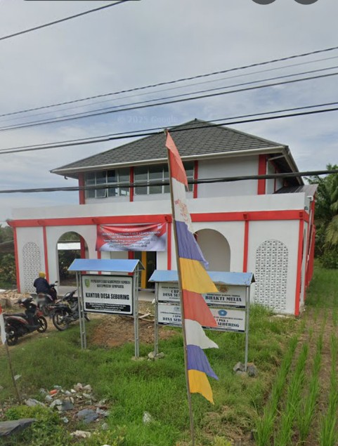

Mengenal Desa Seburing Hilir lebih dekat

TENTANG DESA
Seburing Hilir adalah sebuah wilayah bagian atau dusun/lingkungan yang terletak di dalam wilayah Desa Seburing, Kecamatan Semparuk, Kabupaten Sambas, Provinsi Kalimantan Barat.
Berikut adalah beberapa hal penting mengenai wilayah Seburing Hilir dan kaitannya dengan Desa Seburing: 1.Lokasi Administratif: Secara administratif, wilayah ini berada di Kecamatan Semparuk, Kabupaten Sambas, Kalimantan Barat. 2.Karakteristik & Budaya: Masyarakat di kawasan Seburing Hilir dan sekitarnya sebagian besar mempertahankan tradisi budaya lokal suku Melayu Sambas, termasuk tradisi keagamaan Islam seperti acara Ruahan atau Sya'banan (sedekah nasi dan tahlilan menyambut bulan suci Ramadhan) yang dipimpin oleh tokoh agama setempat (amil/lebai). 3.Fasilitas Umum: Di wilayah Seburing Hilir terdapat fasilitas umum seperti Tempat Pemakaman Umum (TPU) Seburing Hilir yang digunakan oleh warga sekitar. 4.Desa Induk (Desa Seburing):Memiliki luas wilayah sekitar 1.266 hektar.Terbagi menjadi beberapa dusun (seperti Dusun Kartini, Dusun Mulia, dan Dusun Makmur).Batas wilayah Desa Seburing berbatasan langsung dengan Desa Singaraya dan Perapakan di utara, Desa Sepadu di timur, serta Desa Serumpun dan Serunai di selatan dan barat.
Seburing Hilir
Gotong Royong
Terus Berkembang
Terus Didukung